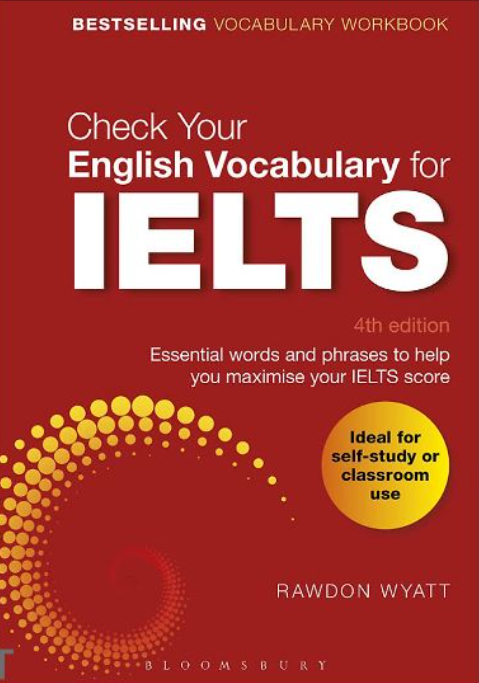

Check Your English Vocabulary for IELTS – cuốn sách của Rawdon Wyatt được biên soạn dành riêng cho người học chuẩn bị thi IELTS tập trung vào việc mở rộng và củng cố vốn từ vựng.
Sách bao gồm nhiều chủ đề quen thuộc trong kỳ thi IELTS kèm theo bài tập thực hành đa dạng giúp người học ghi nhớ từ vựng và sử dụng linh hoạt trong cả bốn kỹ năng nghe, nói, đọc, viết.
Đây là tài liệu hữu ích cho người học ở mọi trình độ đặc biệt là những ai muốn đạt điểm cao trong kỳ thi IELTS. Cuốn sách giúp xây dựng nền tảng từ vựng vững chắc, hỗ trợ tối đa cho quá trình luyện thi.